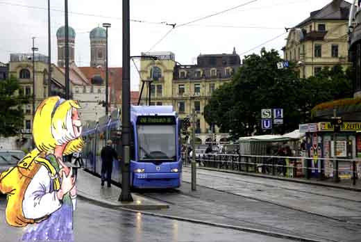
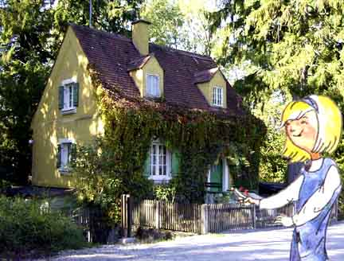
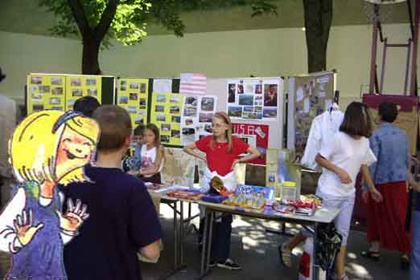
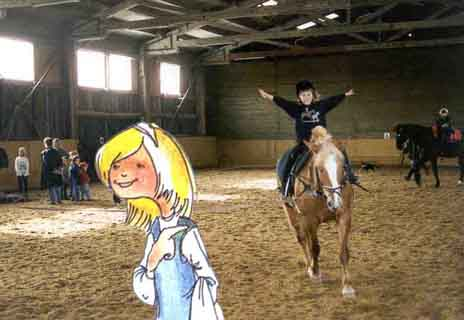
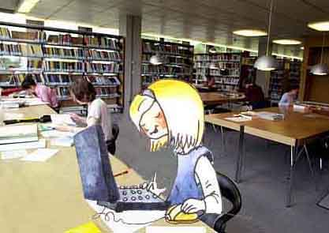
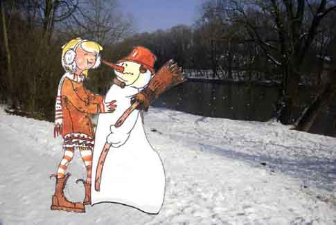
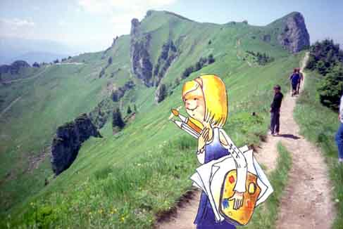
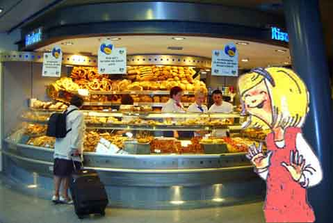

Hallo, ich bin Anna Hagen, Florians Schwester. Ich habe viele Hobbys. Eins davon ist Musik. Jeden Montag Nachmittag gehe ich in die Musikschule. Ich möchte Flöte lernen. Ich habe eine sehr nette Musiklehrerin, Frau Stiebele. Der Unterricht bei ihr ist wirklich toll.

Hier wohnen unsere Großeltern. Das Haus ist sehr alt. Mein Opa hat es vor kurzem selbst renoviert. Jetzt sieht es aus wie neu. Die Zimmer sind zwar klein, aber es ist sehr gemütlich. Florian und ich besuchen unsere Großeltern sehr oft. Im Sommer ist es ganz toll. Wir können reiten und mit Hunden spielen. Und abends sitzen wir auf der Bank vor dem Haus und unsere Oma erzählt uns, wie ihr Leben früher so war.

In der Schule organisieren wir oft Feste, Ausstellungen und verschiedene Wettbewerbe. Im Sommer hat unsere Klasse eine kleine Ausstellung über die USA vorbereitet. Natürlich alles auf Englisch. Alle haben Cola getrunken und Muffins gegessen.

Das ist unsere Cousine Anita aus Nürnberg. Ihr Hobby ist Reiten. Anita mag Tiere und kümmert sich selbst um ihr Pferd. Es heißt Ferdinand und hat einen sehr, sehr lieben Charakter.

Ich bin nicht besonders gut in Mathe und Englisch finde ich auch schwer. Wenn wir eine Klassenarbeit schreiben, gehe ich in die Bibliothek und übe mit einem Lernprogramm. Das letzte Mal hat es geholfen und ich habe eine Zwei gekriegt.

Ich finde den Winter toll! Natürlich ist es manchmal ziemlich kalt. Und dann würde ich am liebsten einfach im Bett bleiben. Aber wenn es schneit, ist es draußen super schön. Und man kann rodeln, Schlittschuh laufen oder einen Schneemann bauen.

In meiner Freizeit male ich gern. Wenn wir unsere Großeltern besuchen, schnappe ich mir Pinsel und Farben und steige auf einen Berg. Da kann ich am besten malen, weil es da traumhaft schön ist. Außerdem entwerfe ich witzige Zeichentrickfiguren. Vielleicht werde ich in der Zukunft Illustratorin oder Künstlerin.

Wenn ich zwischendurch mal Hunger habe, esse ich einen Schokoriegel oder ich kaufe mir ein Brötchen. In der Bäckerei neben unserem Haus gibt es immer eine große Auswahl.